Gene set testing for Illumina HumanMethylation Arrays
Evaluating the functionality and performance of GOregion
Jovana Maksimovic, Alicia Oshlack and Belinda Phipson
May 19, 2020
Last updated: 2020-05-19
Checks: 7 0
Knit directory: methyl-geneset-testing/
This reproducible R Markdown analysis was created with workflowr (version 1.6.2). The Checks tab describes the reproducibility checks that were applied when the results were created. The Past versions tab lists the development history.
Great! Since the R Markdown file has been committed to the Git repository, you know the exact version of the code that produced these results.
Great job! The global environment was empty. Objects defined in the global environment can affect the analysis in your R Markdown file in unknown ways. For reproduciblity it’s best to always run the code in an empty environment.
The command set.seed(20200302) was run prior to running the code in the R Markdown file. Setting a seed ensures that any results that rely on randomness, e.g. subsampling or permutations, are reproducible.
Great job! Recording the operating system, R version, and package versions is critical for reproducibility.
Nice! There were no cached chunks for this analysis, so you can be confident that you successfully produced the results during this run.
Great job! Using relative paths to the files within your workflowr project makes it easier to run your code on other machines.
Great! You are using Git for version control. Tracking code development and connecting the code version to the results is critical for reproducibility.
The results in this page were generated with repository version 63b0011. See the Past versions tab to see a history of the changes made to the R Markdown and HTML files.
Note that you need to be careful to ensure that all relevant files for the analysis have been committed to Git prior to generating the results (you can use wflow_publish or wflow_git_commit). workflowr only checks the R Markdown file, but you know if there are other scripts or data files that it depends on. Below is the status of the Git repository when the results were generated:
Ignored files:
Ignored: .Rhistory
Ignored: .Rproj.user/
Ignored: code/.job/
Ignored: code/old/
Ignored: data/
Ignored: output/FDR-analysis/
Ignored: output/compare-methods/
Ignored: output/random-cpg-sims/
Note that any generated files, e.g. HTML, png, CSS, etc., are not included in this status report because it is ok for generated content to have uncommitted changes.
These are the previous versions of the repository in which changes were made to the R Markdown (analysis/regionAnalysis.Rmd) and HTML (docs/regionAnalysis.html) files. If you’ve configured a remote Git repository (see ?wflow_git_remote), click on the hyperlinks in the table below to view the files as they were in that past version.
| File | Version | Author | Date | Message |
|---|---|---|---|---|
| Rmd | 63b0011 | Jovana Maksimovic | 2020-05-19 | wflow_publish(c(“analysis/exploreArrayBias450.Rmd”, “analysis/exploreArrayBiasEPIC.Rmd”, |
| html | afc650b | JovMaksimovic | 2020-05-11 | Build site. |
| Rmd | 25e58bc | JovMaksimovic | 2020-05-11 | Added BH to pdjust calls, added methylation vs expression plot. |
| html | 9d793dc | JovMaksimovic | 2020-04-28 | Build site. |
| Rmd | 10ef7d4 | JovMaksimovic | 2020-04-28 | wflow_publish(“analysis/regionAnalysis.Rmd”) |
| html | d930b45 | JovMaksimovic | 2020-04-27 | Build site. |
| Rmd | bd39053 | JovMaksimovic | 2020-04-27 | wflow_publish(c(“analysis/exploreData.Rmd”, “analysis/regionAnalysis.Rmd”)) |
| Rmd | cc2c73c | Jovana Maksimovic | 2020-04-21 | Updated region analysis using tidyverse functions. |
| Rmd | d7cd66e | Jovana Maksimovic | 2020-03-02 | Initial Commit |
library(here)
library(ChAMP)
library(minfi)
library(paletteer)
library(limma)
library(BiocParallel)
library(reshape2)
library(DMRcate)
library(missMethyl)
library(ggplot2)
library(glue)
library(UpSetR)
library(dplyr)
library(patchwork)
library(tibble)
library(TxDb.Hsapiens.UCSC.hg19.knownGene)
source(here("code/utility.R"))Load data
We are using publicly available EPIC data GSE110554 generated from flow sorted blood cells. The data is normalised and filtered (bad probes, multi-mapping probes, SNP probes, sex chromosomes).
# load data
dataFile <- here("data/GSE110554-data.RData")
if(file.exists(dataFile)){
# load processed data and sample information
load(dataFile)
} else {
# get data from experiment hub, normalise, filter and save objects
readData(dataFile)
# load processed data and sample information
load(dataFile)
}Statistical analysis
Compare several sets of sorted immune cells. Consider results significant at FDR < 0.05 and delta beta ~ 10% (~ lfc = 0.5).
mVals <- getM(fltGr)
bVals <- getBeta(fltGr)design <- model.matrix(~0+targets$CellType)
colnames(design) <- levels(factor(targets$CellType))
fit <- lmFit(mVals, design)
cont.matrix <- makeContrasts(CD4vCD8=CD4T-CD8T,
MonovNeu=Mono-Neu,
BcellvNK=Bcell-NK,
levels=design)
fit2 <- contrasts.fit(fit, cont.matrix)
tfit <- eBayes(fit2, robust=TRUE, trend=TRUE)
tfit <- treat(tfit, lfc = 0.5)
pval <- 0.05
fitSum <- summary(decideTests(tfit, p.value = pval))
fitSum CD4vCD8 MonovNeu BcellvNK
Down 5072 9324 34803
NotSig 725611 712480 667559
Up 3202 12081 31523Find differentially methylated regions
Identify differentially methylated regions using the DMRcate package.
outFile <- here("data/dmrcate-results.rds")
if(!file.exists(outFile)){
dmrList <- vector("list", ncol(fitSum))
for(i in 1:ncol(fitSum)){
cpgAnn <- cpg.annotate("array", mVals, what = "M", arraytype = "EPIC",
analysis.type = "differential", design = design,
contrasts = TRUE, cont.matrix = cont.matrix,
coef = colnames(fitSum)[i])
dmrList[[i]] <- extractRanges(dmrcate(cpgAnn))
}
saveRDS(dmrList, file = outFile)
} else {
dmrList <- readRDS(outFile)
}GO analysis of DMRs
Run GO analysis on the differentially methylated regions (DMRs) identified by DMRcate for each of the contrasts.
outFile <- here("data/dmrcate-go.rds")
anno <- loadAnnotation(arrayType = "EPIC")
txdb <- TxDb.Hsapiens.UCSC.hg19.knownGene
hg19Genes <- GenomicFeatures::genes(txdb)
dmrGo <- NULL
if(!file.exists(outFile)){
for(i in 1:length(dmrList)){
keep <- (abs(dmrList[[i]]$meandiff) > 0.1 & dmrList[[i]]$no.cpgs >=3)
overlaps <- findOverlaps(hg19Genes, dmrList[[i]][keep, ])
sigGenes <- hg19Genes$gene_id[from(overlaps)]
tmp <- topGO(goana(sigGenes), number = Inf)
tmp <- rownames_to_column(tmp, var = "GO")[, c("GO", "P.DE")]
tmp$method <- "goana"
tmp$contrast <- colnames(cont.matrix)[i]
dmrGo <- bind_rows(dmrGo, tmp)
tmp <- topGSA(goregion(dmrList[[i]][keep, ], anno = anno,
prior.prob = FALSE, array.type = "EPIC"),
number = Inf)
tmp <- rownames_to_column(tmp, var = "GO")[, c("GO", "P.DE")]
tmp$method <- "goregion-hgt"
tmp$contrast <- colnames(cont.matrix)[i]
dmrGo <- bind_rows(dmrGo, tmp)
tmp <- topGSA(goregion(dmrList[[i]][keep, ], anno = anno,
array.type = "EPIC"),
number = Inf)
tmp <- rownames_to_column(tmp, var = "GO")[, c("GO", "P.DE")]
tmp$method <- "goregion-gometh"
tmp$contrast <- colnames(cont.matrix)[i]
dmrGo <- bind_rows(dmrGo, tmp)
tmp <- topGSA(gometh(rownames(topTreat(tfit, coef = i, num = 5000,
p.value = pval)), anno = anno,
array.type = "EPIC"), number = Inf)
tmp <- rownames_to_column(tmp, var = "GO")[, c("GO", "P.DE")]
tmp$method <- "gometh-probe-top"
tmp$contrast <- colnames(cont.matrix)[i]
dmrGo <- bind_rows(dmrGo, tmp)
tmp <- topGSA(gometh(rownames(topTreat(tfit, coef = i, num = Inf,
p.value = pval)), anno = anno,
array.type = "EPIC"), number = Inf)
tmp <- rownames_to_column(tmp, var = "GO")[, c("GO", "P.DE")]
tmp$method <- "gometh-probe-fdr"
tmp$contrast <- colnames(cont.matrix)[i]
dmrGo <- bind_rows(dmrGo, tmp)
}
saveRDS(dmrGo, file = outFile)
} else {
dmrGo <- readRDS(outFile)
}Compare GOregion with other approaches
immuneGO <- unique(read.csv(here("data/GO-immune-system-process.txt"),
stringsAsFactors = FALSE, header = FALSE,
col.names = "GOID"))
dmrGo %>% arrange(contrast, method, P.DE) %>%
group_by(contrast, method) %>%
mutate(csum = cumsum(GO %in% immuneGO$GOID)) %>%
mutate(rank = 1:n()) %>%
filter(rank <= 100) -> dat
p <- ggplot(dat, aes(x = rank, y = csum, colour = method)) +
geom_line() +
facet_wrap(vars(contrast), ncol=3) +
geom_vline(xintercept = 10, linetype = "dotted") +
labs(colour = "Method", x = "Rank", y = "Cumulative no. immune sets")
p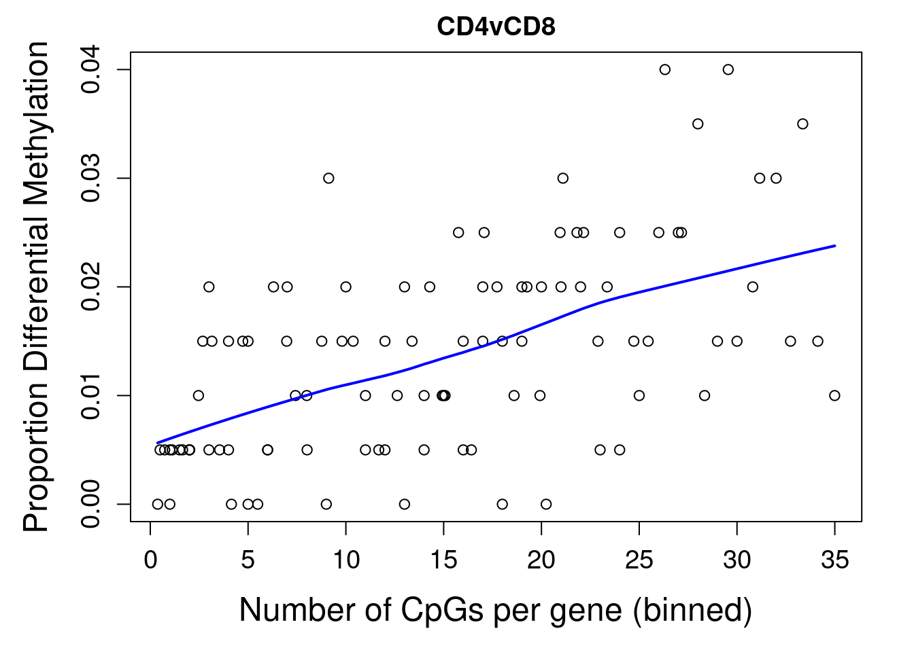
immuneGO <- readRDS(here("data/RNAseq-GO.rds"))
immuneGO %>% group_by(contrast) %>%
mutate(rank = 1:n()) %>%
filter(rank <= 100) -> topSets
dat %>% arrange(contrast, method, P.DE) %>%
group_by(contrast, method) %>%
mutate(csum = cumsum(GO %in% topSets$ID[topSets$contrast %in% contrast])) %>%
mutate(rank = 1:n()) %>%
filter(rank <= 100) -> sub
p <- ggplot(sub, aes(x = rank, y = csum, colour = method)) +
geom_line() +
facet_wrap(vars(contrast), ncol=3) +
geom_vline(xintercept = 10, linetype = "dotted") +
labs(colour = "Method", x = "Rank",
y = glue("Cumulative no. RNAseq sets")) +
theme(legend.position = "bottom")
p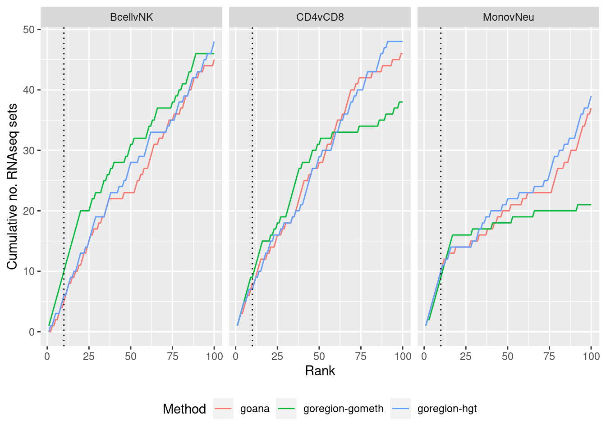
Examine what the top 10 ranked gene sets are and how many genes they contain, for each method and comparison.
terms <- missMethyl:::.getGO()$idTable
nGenes <- rownames_to_column(data.frame(n = sapply(missMethyl:::.getGO()$idList,
length)),
var = "ID")
dat %>% arrange(contrast, method, P.DE) %>%
group_by(contrast, method) %>%
mutate(FDR = p.adjust(P.DE, method = "BH")) %>%
filter(rank <= 10) %>%
inner_join(terms, by = c("GO" = "GOID")) %>%
inner_join(nGenes, by = c("GO" = "ID")) -> sub
p <- vector("list", length(unique(sub$contrast)) * length(unique(sub$method)))
i = 1
for(cont in unique(sub$contrast)){
c = 1
for(meth in unique(sub$method)){
tmp <- sub %>% filter(contrast == cont & method == meth) %>%
mutate(rank = factor(rank),
rank = factor(rank, levels = rev(levels(rank))))
p[[i]] <- ggplot(tmp, aes(x = -log10(FDR), y = rank)) +
geom_point(aes(size = n), alpha = 0.5,
colour = scales::hue_pal()(length(unique(sub$method)))[c]) +
scale_y_discrete(labels = rev(tmp$TERM)) +
labs(y = "", size = "No. genes", title = meth) +
theme(axis.text.y = element_text(size = 6),
plot.title = element_text(size = 8),
legend.position = "right",
legend.key.size = unit(0.25, "cm"),
legend.text = element_text(size = 6),
legend.title = element_text(size = 8),
axis.text.x = element_text(size = 6),
axis.title.x = element_text(size = 8)) +
coord_cartesian(xlim = c(-log10(0.99), -log10(10^-100))) +
geom_vline(xintercept = -log10(0.05), linetype = "dashed")
i = i + 1
c = c + 1
}
}
(p[[1]] / p[[2]] / p[[3]] / p[[4]] / p[[5]]) +
plot_annotation(title = unique(sub$contrast)[1],
theme = theme(plot.title = element_text(size = 10))) 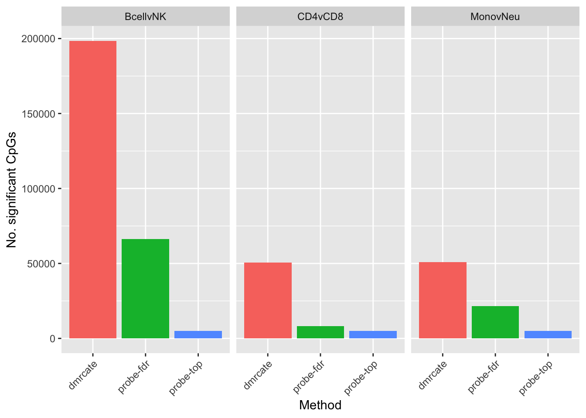
| Version | Author | Date |
|---|---|---|
| d930b45 | JovMaksimovic | 2020-04-27 |
(p[[6]] / p[[7]] / p[[8]] / p[[9]] / p[[10]]) +
plot_annotation(title = unique(sub$contrast)[2],
theme = theme(plot.title = element_text(size = 10))) 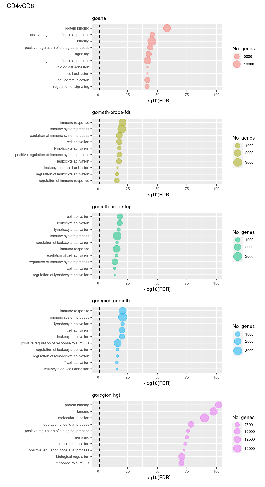
(p[[11]] / p[[12]] / p[[13]] / p[[14]] / p[[15]]) +
plot_annotation(title = unique(sub$contrast)[3],
theme = theme(plot.title = element_text(size = 10))) 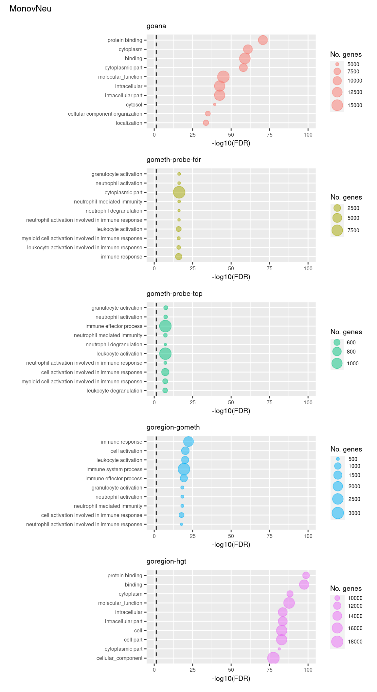
Compare characteristics of region-wise and probe-wise results
cpgs <- GRanges(seqnames = anno$chr,
ranges = IRanges(start = anno$pos,
end = anno$pos),
strand = anno$strand,
name = anno$Name)
dat <- NULL
for(i in 1:ncol(cont.matrix)){
overlaps <- findOverlaps(cpgs, dmrList[[i]])
tmp <- data.frame(cpgs = cpgs$name[from(overlaps)],
method = "dmrcate",
contrast = colnames(cont.matrix)[i],
stringsAsFactors = FALSE)
dat <- bind_rows(dat, tmp)
tmp <- data.frame(cpgs = rownames(topTreat(tfit, coef = i, num = 5000)),
method = "probe-top",
contrast = colnames(cont.matrix)[i],
stringsAsFactors = FALSE)
dat <- bind_rows(dat, tmp)
tmp <- data.frame(cpgs = rownames(topTreat(tfit, coef = i, num = Inf,
p.value = pval)),
method = "probe-fdr",
contrast = colnames(cont.matrix)[i],
stringsAsFactors = FALSE)
dat <- bind_rows(dat, tmp)
}
dat %>% group_by(contrast, method) %>% tally() -> sub
ggplot(sub, aes(x = method, y = n, fill = method)) +
geom_bar(stat = "identity", show.legend = FALSE) +
facet_wrap(vars(contrast)) +
labs(fill = "Method", y = "No. significant CpGs", x = "Method") +
theme(axis.text.x = element_text(angle = 45, hjust = 1))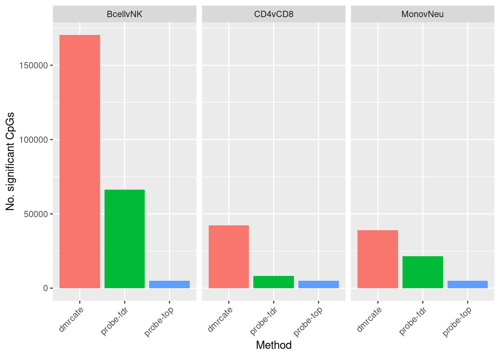
| Version | Author | Date |
|---|---|---|
| d930b45 | JovMaksimovic | 2020-04-27 |
flatAnn <- loadFlatAnnotation(anno)
dat %>% group_by(contrast, method) %>%
inner_join(flatAnn, by = c("cpgs" = "cpg")) %>%
group_by(contrast, method) %>%
dplyr::select(group_cols(), entrezid) %>%
distinct() %>%
tally() -> sub
ggplot(sub, aes(x = method, y = n, fill = method)) +
geom_bar(stat = "identity", show.legend = FALSE) +
facet_wrap(vars(contrast)) +
labs(fill = "Method", y = "No. genes with sig. CpGs", x = "Method") +
theme(axis.text.x = element_text(angle = 45, hjust = 1))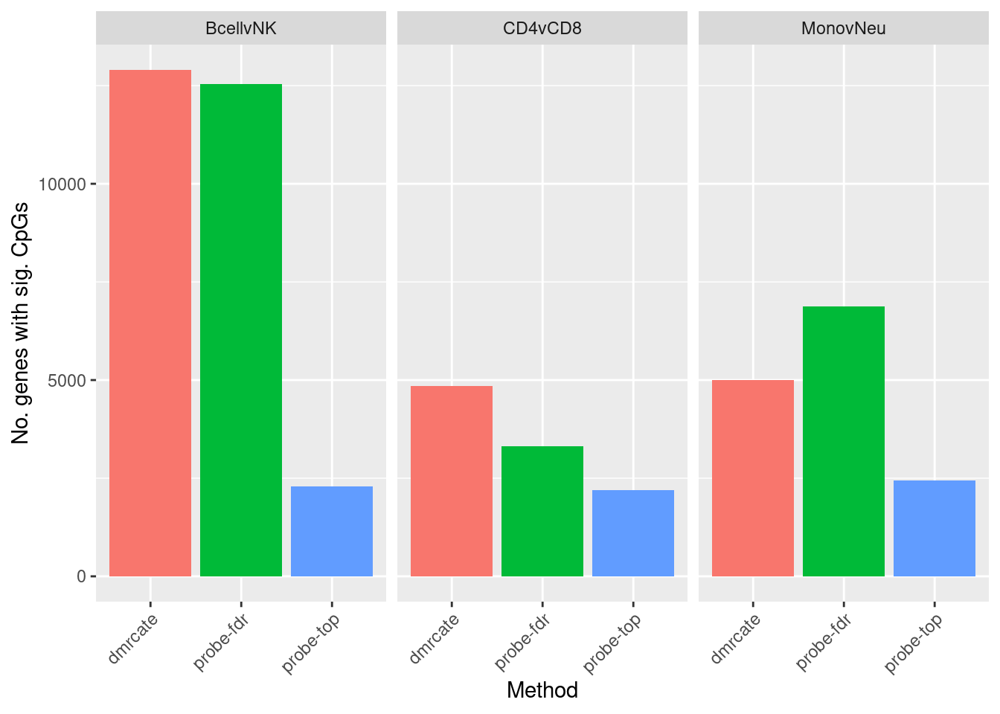
| Version | Author | Date |
|---|---|---|
| d930b45 | JovMaksimovic | 2020-04-27 |
dat %>% group_by(contrast, method) %>%
left_join(flatAnn, by = c("cpgs" = "cpg")) %>%
group_by(contrast, method) %>%
dplyr::select(group_cols(), entrezid, cpgs) %>%
summarise(prop = sum(!is.na(entrezid[!duplicated(cpgs)]))/
length(unique(cpgs))) -> sub
ggplot(sub, aes(x = method, y = prop, fill = method)) +
geom_bar(stat = "identity", show.legend = FALSE) +
facet_wrap(vars(contrast)) +
labs(fill = "Method", y = "Prop. sig. CpGs mapped to genes", x = "Method") +
theme(axis.text.x = element_text(angle = 45, hjust = 1))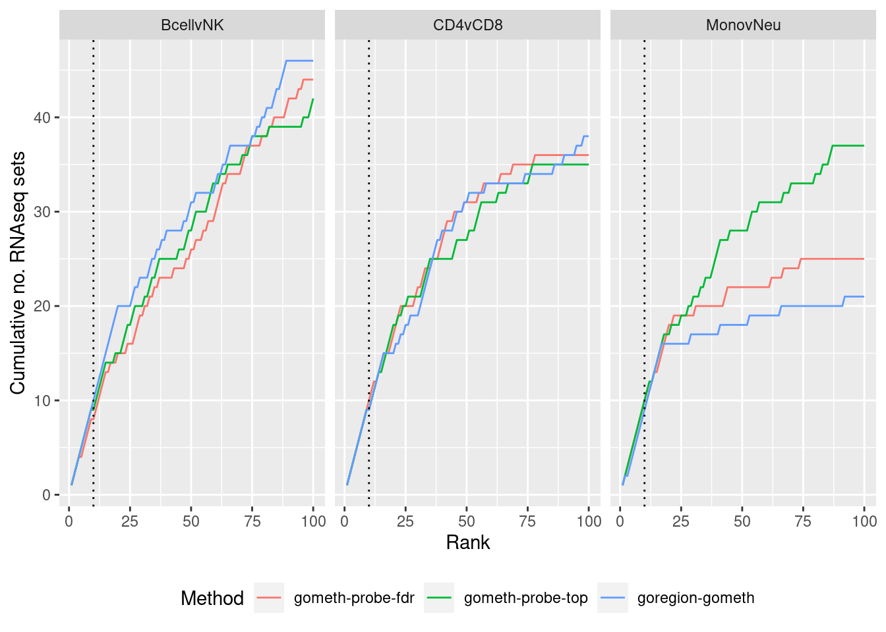
| Version | Author | Date |
|---|---|---|
| d930b45 | JovMaksimovic | 2020-04-27 |
dat %>% group_by(contrast, method) %>%
left_join(flatAnn, by = c("cpgs" = "cpg")) %>%
group_by(contrast, method) %>%
dplyr::select(group_cols(), group, cpgs) %>%
group_by(contrast, method, group) %>%
tally() -> sub
ggplot(sub, aes(x = group, y = n, fill = method)) +
geom_bar(stat = "identity", position = "dodge") +
facet_wrap(vars(contrast), nrow = 3, ncol = 1, scales = "free_y") +
labs(fill = "Method", y = "No. sig. CpGs mapped to genomic features",
x = "Feature") +
theme(axis.text.x = element_text(angle = 45, hjust = 1))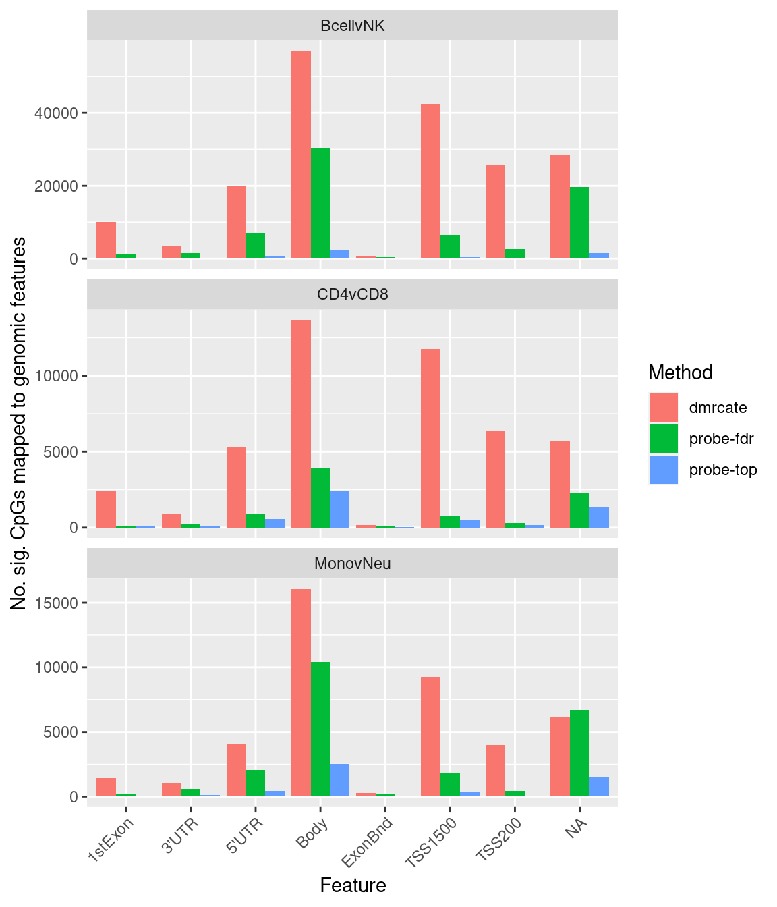
| Version | Author | Date |
|---|---|---|
| d930b45 | JovMaksimovic | 2020-04-27 |
CpG overlap between region-wise and probe-wise approaches
Compare the CpGs covered by the different approaches, for the three contrasts.
p <- vector("list", ncol(cont.matrix))
for(i in 1:ncol(cont.matrix)){
dat %>% filter(contrast == colnames(cont.matrix)[i]) -> tmp
tmp <- split(tmp$cpgs, f = tmp$method)
p[[i]] <- upset(fromList(tmp), order.by = "freq", keep.order = TRUE,
sets = names(tmp))
}
p[[1]]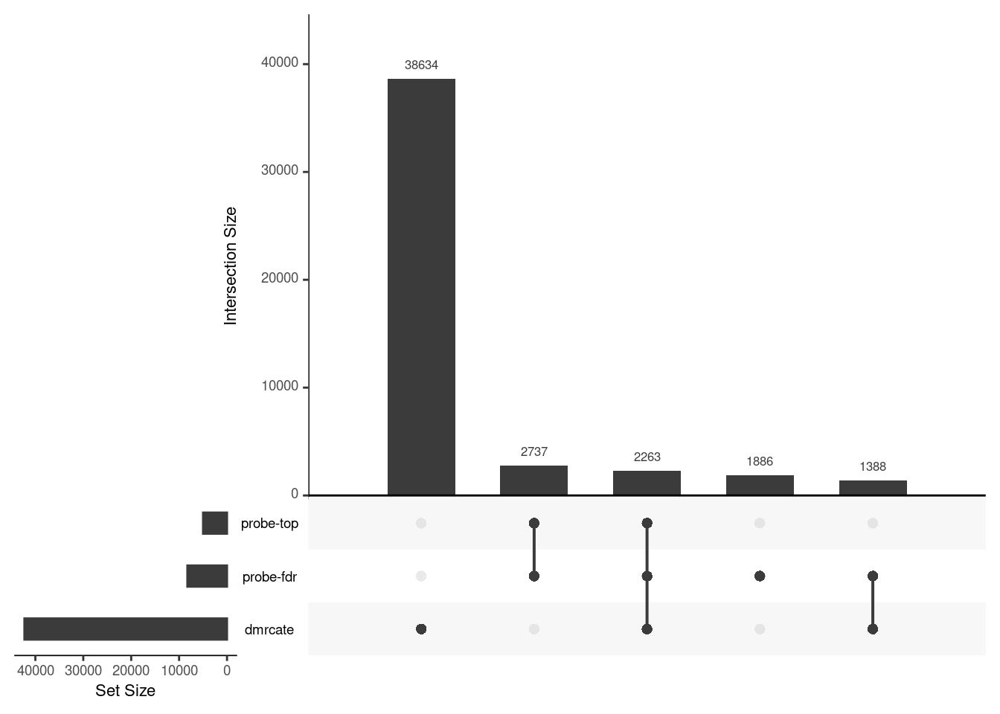
| Version | Author | Date |
|---|---|---|
| d930b45 | JovMaksimovic | 2020-04-27 |
p[[2]]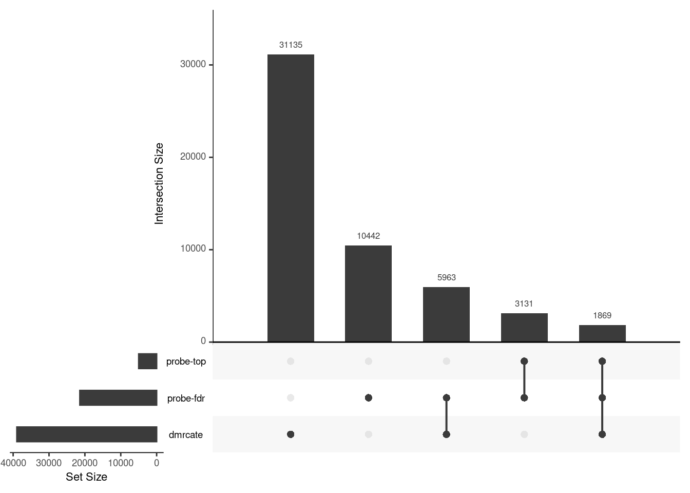
| Version | Author | Date |
|---|---|---|
| d930b45 | JovMaksimovic | 2020-04-27 |
p[[3]]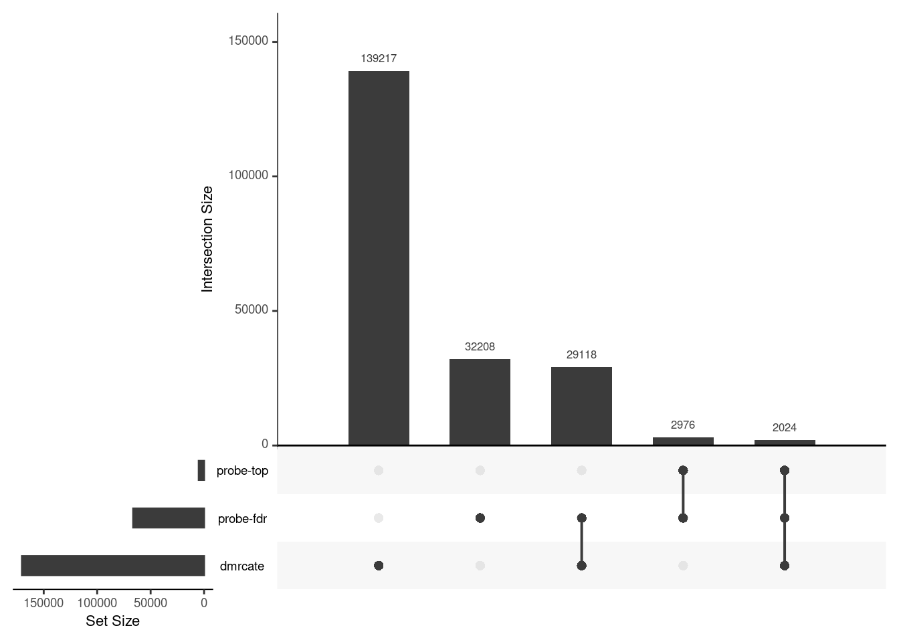
| Version | Author | Date |
|---|---|---|
| d930b45 | JovMaksimovic | 2020-04-27 |
Gene overlap between region-wise and probe-wise approaches
Compare the genes covered by the different approaches, for the three contrasts.
p <- vector("list", ncol(cont.matrix))
for(i in 1:ncol(cont.matrix)){
dat %>% filter(contrast == colnames(cont.matrix)[i]) %>%
left_join(flatAnn, by = c("cpgs" = "cpg")) %>%
dplyr::select(method, entrezid) %>%
distinct() -> tmp
tmp <- split(tmp$entrezid, f = tmp$method)
p[[i]] <- upset(fromList(tmp), order.by = "freq", keep.order = TRUE,
sets = names(tmp))
}
p[[1]]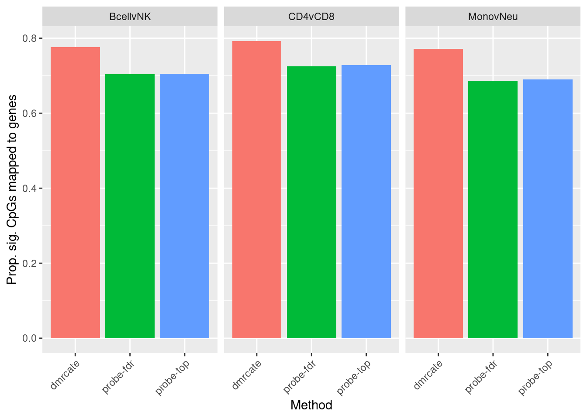
p[[2]]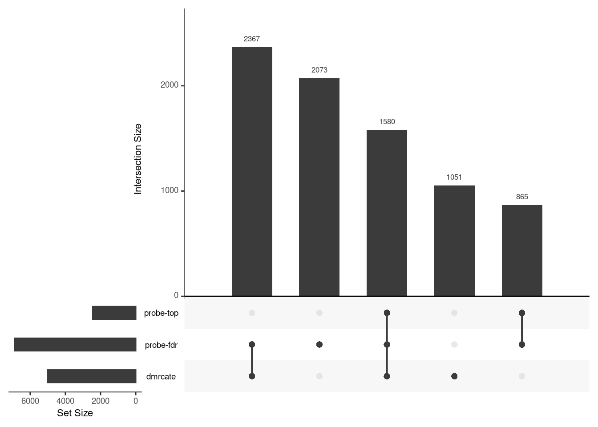
p[[3]]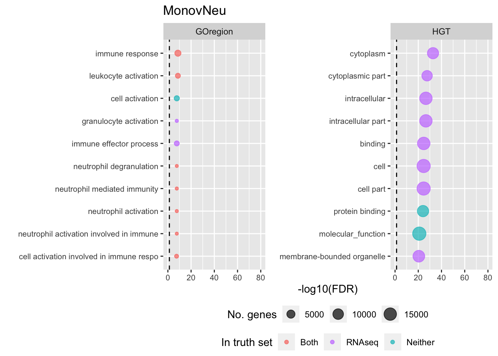
Effect of DMR cut offs i.e. num probes in region and absolute delta beta
outFile <- here("data/dmrcate-params.rds")
dmrParams <- NULL
meanDiffs <- seq(0, 0.2, by = 0.1)
noCpgs <- 2:4
if(!file.exists(outFile)){
for(i in 1:length(dmrList)){
for(j in meanDiffs){
for(k in noCpgs){
keep <- (abs(dmrList[[i]]$meandiff) > j &
dmrList[[i]]$no.cpgs >= k)
tmp <- topGSA(goregion(dmrList[[i]][keep, ], anno = anno,
array.type = "EPIC"),
number = Inf)
tmp <- rownames_to_column(tmp, var = "GO")[, c("GO", "P.DE")]
tmp$params <- glue("|Beta| = {j}; No. CpGs = {k}")
tmp$contrast <- colnames(cont.matrix)[i]
dmrParams <- bind_rows(dmrParams, tmp)
}
}
}
saveRDS(dmrParams, file = outFile)
} else {
dmrParams <- readRDS(outFile)
}Examine effect of changing DMr parameter cut offs on gene set rankings of GO categories in “immune system process”.
immuneGO <- unique(read.csv(here("data/GO-immune-system-process.txt"),
stringsAsFactors = FALSE, header = FALSE,
col.names = "GOID"))
dmrParams %>% arrange(contrast, params, P.DE) %>%
group_by(contrast, params) %>%
mutate(csum = cumsum(GO %in% immuneGO$GOID)) %>%
mutate(rank = 1:n()) %>%
filter(rank <= 100) -> dat
p <- ggplot(dat, aes(x = rank, y = csum, colour = params)) +
geom_line() +
facet_wrap(vars(contrast), ncol=3) +
geom_vline(xintercept = 10, linetype = "dotted") +
labs(colour = "Parameters", x = "Rank", y = "Cumulative no. immune sets")
p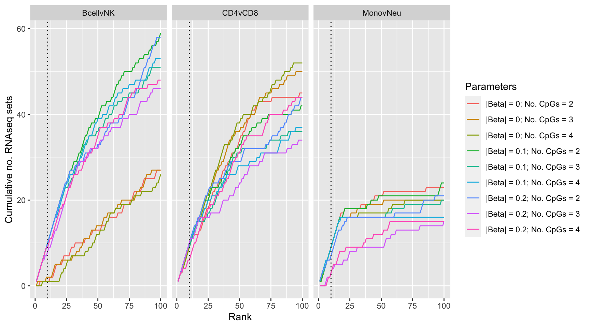
Examine effect of changing DMR parameter cut offs on gene set rankings on GO categories derived from RNAseq analysis.
immuneGO <- readRDS(here("data/RNAseq-GO.rds"))
immuneGO %>% group_by(contrast) %>%
mutate(rank = 1:n()) %>%
filter(rank <= 100) -> topSets
dmrParams %>% arrange(contrast, params, P.DE) %>%
group_by(contrast, params) %>%
mutate(csum = cumsum(GO %in% topSets$ID[topSets$contrast %in% contrast])) %>%
mutate(rank = 1:n()) %>%
filter(rank <= 100) -> sub
p <- ggplot(sub, aes(x = rank, y = csum, colour = params)) +
geom_line() +
facet_wrap(vars(contrast), ncol=3) +
geom_vline(xintercept = 10, linetype = "dotted") +
labs(colour = "Parameters", x = "Rank",
y = glue("Cumulative no. RNAseq sets"))
p
sessionInfo()R version 3.6.1 (2019-07-05)
Platform: x86_64-pc-linux-gnu (64-bit)
Running under: CentOS Linux 7 (Core)
Matrix products: default
BLAS: /config/RStudio/R/3.6.1/lib64/R/lib/libRblas.so
LAPACK: /config/RStudio/R/3.6.1/lib64/R/lib/libRlapack.so
locale:
[1] LC_CTYPE=en_AU.UTF-8 LC_NUMERIC=C
[3] LC_TIME=en_AU.UTF-8 LC_COLLATE=en_AU.UTF-8
[5] LC_MONETARY=en_AU.UTF-8 LC_MESSAGES=en_AU.UTF-8
[7] LC_PAPER=en_AU.UTF-8 LC_NAME=C
[9] LC_ADDRESS=C LC_TELEPHONE=C
[11] LC_MEASUREMENT=en_AU.UTF-8 LC_IDENTIFICATION=C
attached base packages:
[1] stats4 parallel stats graphics grDevices utils datasets
[8] methods base
other attached packages:
[1] TxDb.Hsapiens.UCSC.hg19.knownGene_3.2.2
[2] GenomicFeatures_1.36.4
[3] tibble_2.1.3
[4] patchwork_1.0.0
[5] dplyr_0.8.5
[6] UpSetR_1.4.0
[7] glue_1.4.1
[8] ggplot2_3.3.0
[9] missMethyl_1.20.4
[10] reshape2_1.4.3
[11] paletteer_1.1.0
[12] ChAMP_2.16.2
[13] DT_0.9
[14] IlluminaHumanMethylationEPICmanifest_0.3.0
[15] Illumina450ProbeVariants.db_1.22.0
[16] DMRcate_2.0.7
[17] FEM_3.14.0
[18] graph_1.62.0
[19] org.Hs.eg.db_3.8.2
[20] impute_1.58.0
[21] igraph_1.2.5
[22] corrplot_0.84
[23] marray_1.62.0
[24] limma_3.42.2
[25] Matrix_1.2-18
[26] AnnotationDbi_1.46.1
[27] ChAMPdata_2.18.0
[28] minfi_1.32.0
[29] bumphunter_1.26.0
[30] locfit_1.5-9.1
[31] iterators_1.0.12
[32] foreach_1.5.0
[33] Biostrings_2.54.0
[34] XVector_0.24.0
[35] SummarizedExperiment_1.16.1
[36] DelayedArray_0.12.3
[37] BiocParallel_1.20.1
[38] matrixStats_0.56.0
[39] Biobase_2.46.0
[40] GenomicRanges_1.38.0
[41] GenomeInfoDb_1.22.1
[42] IRanges_2.20.2
[43] S4Vectors_0.24.4
[44] BiocGenerics_0.32.0
[45] here_0.1
[46] workflowr_1.6.2
loaded via a namespace (and not attached):
[1] rappdirs_0.3.1
[2] rtracklayer_1.44.4
[3] R.methodsS3_1.7.1
[4] wateRmelon_1.30.0
[5] pkgmaker_0.27
[6] tidyr_1.0.3
[7] acepack_1.4.1
[8] bit64_0.9-7
[9] knitr_1.28
[10] R.utils_2.9.0
[11] data.table_1.12.8
[12] rpart_4.1-15
[13] doParallel_1.0.15
[14] RCurl_1.95-4.12
[15] GEOquery_2.54.1
[16] AnnotationFilter_1.8.0
[17] preprocessCore_1.48.0
[18] RSQLite_2.1.2
[19] combinat_0.0-8
[20] bit_1.1-14
[21] xml2_1.3.2
[22] httpuv_1.5.2
[23] assertthat_0.2.1
[24] IlluminaHumanMethylation450kmanifest_0.4.0
[25] viridis_0.5.1
[26] isva_1.9
[27] IlluminaHumanMethylationEPICanno.ilm10b4.hg19_0.6.0
[28] xfun_0.13
[29] hms_0.5.3
[30] evaluate_0.14
[31] DNAcopy_1.58.0
[32] promises_1.1.0
[33] scrime_1.3.5
[34] progress_1.2.2
[35] dendextend_1.13.4
[36] dbplyr_1.4.2
[37] DBI_1.0.0
[38] htmlwidgets_1.3
[39] reshape_0.8.8
[40] purrr_0.3.4
[41] ROC_1.62.0
[42] backports_1.1.7
[43] permute_0.9-5
[44] annotate_1.62.0
[45] biomaRt_2.42.1
[46] vctrs_0.3.0
[47] ensembldb_2.8.0
[48] withr_2.1.2
[49] globaltest_5.40.0
[50] Gviz_1.28.3
[51] BSgenome_1.52.0
[52] checkmate_1.9.4
[53] GenomicAlignments_1.20.1
[54] prettyunits_1.0.2
[55] mclust_5.4.6
[56] cluster_2.1.0
[57] RPMM_1.25
[58] ExperimentHub_1.12.0
[59] lazyeval_0.2.2
[60] crayon_1.3.4
[61] genefilter_1.68.0
[62] labeling_0.3
[63] edgeR_3.26.8
[64] pkgconfig_2.0.3
[65] palr_0.2.0
[66] nlme_3.1-147
[67] ProtGenerics_1.16.0
[68] pals_1.6
[69] nnet_7.3-12
[70] rlang_0.4.6
[71] lifecycle_0.2.0
[72] nleqslv_3.3.2
[73] registry_0.5-1
[74] affyio_1.54.0
[75] BiocFileCache_1.10.2
[76] AnnotationHub_2.18.0
[77] dichromat_2.0-0
[78] rprojroot_1.3-2
[79] rngtools_1.4
[80] IlluminaHumanMethylation450kanno.ilmn12.hg19_0.6.0
[81] base64_2.0
[82] Rhdf5lib_1.6.1
[83] base64enc_0.1-3
[84] geneLenDataBase_1.20.0
[85] whisker_0.4
[86] viridisLite_0.3.0
[87] oompaBase_3.2.9
[88] bitops_1.0-6
[89] R.oo_1.22.0
[90] KernSmooth_2.23-15
[91] blob_1.2.0
[92] DelayedMatrixStats_1.8.0
[93] doRNG_1.7.1
[94] qvalue_2.16.0
[95] stringr_1.4.0
[96] nor1mix_1.3-0
[97] readr_1.3.1
[98] scales_1.1.1
[99] memoise_1.1.0
[100] magrittr_1.5
[101] plyr_1.8.6
[102] bibtex_0.4.2
[103] zlibbioc_1.30.0
[104] compiler_3.6.1
[105] RColorBrewer_1.1-2
[106] illuminaio_0.28.0
[107] clue_0.3-57
[108] JADE_2.0-3
[109] Rsamtools_2.0.1
[110] DSS_2.34.0
[111] affy_1.62.0
[112] IlluminaHumanMethylationEPICanno.ilm10b2.hg19_0.6.0
[113] htmlTable_1.13.2
[114] Formula_1.2-3
[115] MASS_7.3-51.6
[116] mgcv_1.8-29
[117] tidyselect_0.2.5
[118] stringi_1.4.6
[119] yaml_2.2.1
[120] askpass_1.1
[121] latticeExtra_0.6-28
[122] grid_3.6.1
[123] VariantAnnotation_1.30.1
[124] tools_3.6.1
[125] ruv_0.9.7.1
[126] rstudioapi_0.11
[127] foreign_0.8-72
[128] git2r_0.27.1
[129] bsseq_1.22.0
[130] gridExtra_2.3
[131] farver_2.0.3
[132] digest_0.6.25
[133] BiocManager_1.30.10
[134] shiny_1.3.2
[135] quadprog_1.5-8
[136] Rcpp_1.0.4.6
[137] siggenes_1.60.0
[138] BiocVersion_3.10.1
[139] later_1.0.0
[140] httr_1.4.1
[141] biovizBase_1.32.0
[142] lumi_2.38.0
[143] colorspace_1.4-1
[144] XML_3.98-1.20
[145] fs_1.4.1
[146] splines_3.6.1
[147] statmod_1.4.32
[148] rematch2_2.1.0
[149] kpmt_0.1.0
[150] multtest_2.40.0
[151] mapproj_1.2.6
[152] shinythemes_1.1.2
[153] plotly_4.9.0
[154] jcolors_0.0.4
[155] xtable_1.8-4
[156] jsonlite_1.6.1
[157] scico_1.1.0
[158] R6_2.4.1
[159] Hmisc_4.2-0
[160] pillar_1.4.4
[161] htmltools_0.4.0
[162] mime_0.9
[163] interactiveDisplayBase_1.22.0
[164] beanplot_1.2
[165] codetools_0.2-16
[166] maps_3.3.0
[167] lattice_0.20-41
[168] sva_3.34.0
[169] curl_4.3
[170] BiasedUrn_1.07
[171] gtools_3.8.1
[172] GO.db_3.8.2
[173] openssl_1.4.1
[174] survival_2.44-1.1
[175] rmarkdown_2.1
[176] methylumi_2.30.0
[177] fastICA_1.2-2
[178] munsell_0.5.0
[179] rhdf5_2.30.1
[180] GenomeInfoDbData_1.2.1
[181] goseq_1.36.0
[182] HDF5Array_1.14.4
[183] gtable_0.3.0